Creating Ellipsoid Based Niches
Source:vignettes/creating_ellipsoid_based_niches.Rmd
creating_ellipsoid_based_niches.RmdSummary
- Description
- Getting ready
- Loading example data
- Building and visualizing ellipsoid niches
- Working in more than 2 dimensions
Description
This vignette introduces the core workflow for defining species
ecological niches as ellipsoids in environmental space using the
nicheR package. The ellipsoid-based approach follows the
Hutchinsonian concept of the ecological niche by representing the set of
environmental conditions under which a species can persist as an
n-dimensional hypervolume in multivariate environmental space.
Ellipsoids are well-suited to this task because they are a
straightforward and interpatable way of capturing the shape, size, and
orientation of a species’ niche, including correlations between
environmental variables.
The main functions covered in this vignette are:
-
build_ellipsoid(): constructs anicheR_ellipsoidobject from user-defined environmental ranges. -
update_ellipsoid_covariance(): modifies the covariance structure of an existing ellipsoid to introduce correlations between environmental variables. -
plot_ellipsoid(): visualizes an ellipsoid in two-dimensional environmental space, optionally alongside background data. -
add_ellipsoid(): adds an additional ellipsoid to an existing plot for visual comparison. -
add_data(): overlays additional data points (centroids, other background data, occurrence records) onto an existing ellipsoid plot. -
plot_ellipsoid_pairs(): plots all pairwise projections of a multidimensional ellipsoid at once. -
save_nicheR()/read_nicheR(): saves and reloadsnicheRobjects to and from disk.
Getting ready
If nicheR has not been installed yet, please do so. See
the Main guide for installation
instructions.
Use the following lines of code to load nicheR and other
packages needed for this vignette, and to set a working directory (if
necessary).
Note: We will display functions from other packages as
package::function().
# Load packages
library(nicheR)
#library(terra)
# Current directory
getwd()
# Define new directory
#setwd("YOUR/DIRECTORY") # modify if setting a new directoryLoading example data
The lines of code below load the environmental raster data included
in the nicheR package. These layers represent Bioclim
variables and will be used both as background data to provide
environmental context and as the basis for visualizing ellipsoids.
# Load raster layers
bios <- terra::rast(system.file("extdata", "ma_bios.tif",
package = "nicheR"))For the examples in this vignette we will work with three variables: mean annual temperature (bio_1), annual precipitation (bio_12), and precipitation seasonality (bio_15). We extract these layers and convert them to a data frame for use in plotting and background comparisons.
# Subset to the three variables used in this vignette
bios <- bios[[c("bio_1", "bio_12", "bio_15")]]
# Convert raster to data frame (retaining xy coordinates)
bios_df <- as.data.frame(bios, xy = TRUE)
# Quick look at each variable
terra::plot(c(bios$bio_1, bios$bio_12, bios$bio_15),
main = c("Bio 1 - Mean Annual Temperature",
"Bio 12 - Annual Precipitation",
"Bio 15 - Precipitation Seasonality"))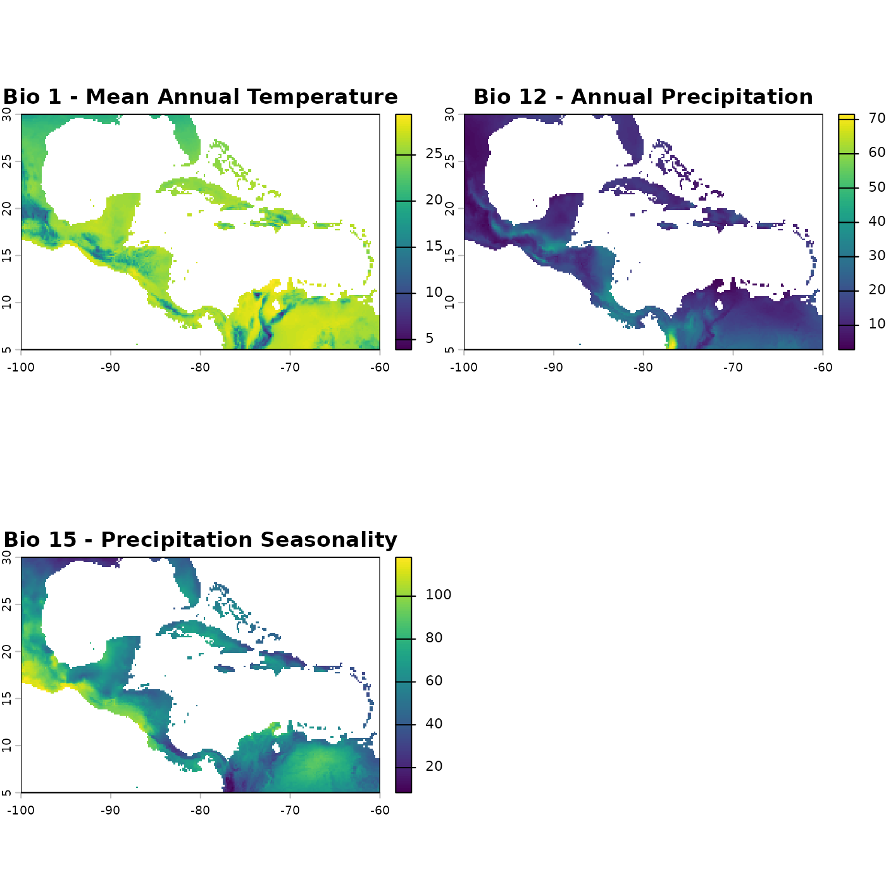
Background
A key distinction in ecological niche modeling is between environmental space (E-space) and geographic space (G-space). E-space is the multivariate space defined by environmental variables, such as temperature and precipitation, where each axis represents a single variable and each point represents a unique combination of environmental conditions. The ellipsoid niche is defined and parameterized entirely in E-space, where its shape, size, and position have direct ecological meaning. G-space, by contrast, is the familiar two-dimensional geographic map, where each point corresponds to a location on the landscape. Because every geographic location can be characterized by its environmental conditions, there is a direct relationship between the two concepts and once a niche is defined in E-space it can be projected onto G-space to identify which locations on a real landscape fall within the species’ tolerances. This projection from E-space to G-space is what produces a map of predicted suitable habitat, and is covered in the Making Predictions vignette.
The foundation of niche modeling in nicheR is the
ellipsoid, which represents the set of environmental conditions a
species can tolerate. An ellipsoid in environmental space is defined by
three components: a centroid (the optimal or central environmental
conditions), a covariance matrix (which controls the shape and
orientation of the ellipsoid), and a volume (determined by the size of
the environmental ranges). The boundary of the ellipsoid is defined by a
threshold of the Mahalanobis distance from the centroid, a multivariate
measure of distance that accounts for correlations among variables.
The Mahalanobis distance of a point in E-space measures how far that point lies from the centroid of the ellipsoid, scaled by the covariance structure of the niche. Unlike Euclidean distance, which treats all directions equally, Mahalanobis distance accounts for the fact that the ellipsoid may extend further along some environmental axes than others, and that axes may be correlated. A point that falls exactly on the boundary of the ellipsoid has a Mahalanobis distance equal to the chi-square cutoff; points inside the ellipsoid have smaller distances and are considered suitable, while points outside have larger distances and are considered unsuitable. This means that suitability declines continuously and symmetrically from the centroid outward, reaching zero at the ellipsoid boundary.
Creating a basic ellipsoid
The function build_ellipsoid() constructs a niche
ellipsoid from user-supplied environmental ranges. The centroid is
placed at the midpoint of each range, and no correlation between
variables is assumed. The size of the ellipsoid along each axis is
determined by the range provided.
In the example below, we define a species tolerating mean annual temperatures between 20 and 32 degrees and annual precipitation between 750 and 4000 mm.
# Define environmental ranges for the species
range <- data.frame(bio_1 = c(20, 32),
bio_12 = c(750, 4000))
# Build the ellipsoid
ell <- build_ellipsoid(range = range)
#> Starting: building ellipsoidal niche from ranges...
#> Step: computing covariance matrix...
#> Step: computing additional ellipsoidal niche metrics...
#> Done: created ellipsoidal niche.Printing the ellipsoid object provides a summary of its key properties.
print(ell)
#> nicheR Ellipsoid Object
#> -----------------------
#> Dimensions: 2D
#> Chi-square cutoff: 9.21
#> Centroid (mu): 26, 2375
#>
#> Covariance matrix:
#> bio_1 bio_12
#> bio_1 4 0.0
#> bio_12 0 293402.8
#>
#> Ellipsoid semi-axis lengths:
#> 1643.879, 6.07
#>
#> Ellipsoid axis endpoints:
#> Axis 1:
#> bio_1 bio_12
#> vertex_a 26 731.121
#> vertex_b 26 4018.879
#>
#> Axis 2:
#> bio_1 bio_12
#> vertex_a 32.07 2375
#> vertex_b 19.93 2375
#>
#> Ellipsoid volume: 31346.4Each component of the printed output describes a different aspect of the ellipsoid:
Dimensions reports the number of environmental variables the ellipsoid is defined in. Here we are working in 2D space (bio_1 and bio_12).
Chi-square cutoff is the Mahalanobis distance threshold that defines the outer boundary of the ellipsoid. It is derived from the chi-squared distribution with degrees of freedom equal to the number of dimensions, at a fixed probability level. Any point in environmental space with a Mahalanobis distance from the centroid less than or equal to this value is considered within the niche. A cutoff of 9.21 corresponds to the 99th percentile of the chi-squared distribution with 2 degrees of freedom.
Centroid is the center of the ellipsoid in environmental space, placed at the midpoint of each supplied range. For our species this is bio_1 = 26 and bio_12 = 2375, which correspond exactly to the midpoints of the ranges we defined (20 to 32 and 750 to 4000 respectively).
Covariance matrix describes the shape and orientation of the ellipsoid. The diagonal values are the variances along each environmental axis and determine how elongated the ellipsoid is in each direction. Off-diagonal values represent covariance between variables; since we have not yet applied any, these are zero and the ellipsoid axes are aligned with the coordinate axes.
Ellipsoid semi-axis lengths are the half-lengths of the ellipsoid along each of its principal axes, in the units of the corresponding variables. These are calculated as the square root of each eigenvalue of the covariance matrix multiplied by the chi-square cutoff. The first axis (1643.879 units) runs along the bio_12 direction and the second (6.07 units) runs along bio_1, reflecting that our precipitation range is much wider in absolute terms than our temperature range.
Ellipsoid axis endpoints give the actual coordinates of where each semi-axis terminates in environmental space. Axis 1 spans bio_12 from 731.1 to 4018.9 at a fixed bio_1 of 26, confirming that the full precipitation range of the ellipsoid is recovered from the centroid plus or minus the semi-axis length. Axis 2 spans bio_1 from 19.93 to 32.07 at a fixed bio_12 of 2375, similarly recovering the temperature range we defined.
Ellipsoid volume is the hypervolume of the ellipsoid in the units of the environmental variables, calculated as the product of the semi-axis lengths scaled by the appropriate geometric constant (pi in 2D). This gives a single number summarizing the total amount of environmental space the niche occupies and is useful for comparing niche breadth across species.
The ellipsoid can be quickly visualized using
plot_ellipsoid(). On its own, this shows the ellipsoid
boundary in the selected pair of dimensions.
plot_ellipsoid(ell)Overlaying background environmental data places the ellipsoid in the
context of what is actually available in the study region. This helps
evaluate whether the defined niche is ecologically realistic and how
much of the available environmental space the species may be predicted
to occupy. Note: Background data is not a strict requirement for
defining an ellipsoid niche in nicheR; niches can also be
defined purely in theoretical space without reference to any background
data. For a walkthrough of that alternative approach, see this vignette.
plot_ellipsoid(ell, background = bios_df, dim = c(1, 2))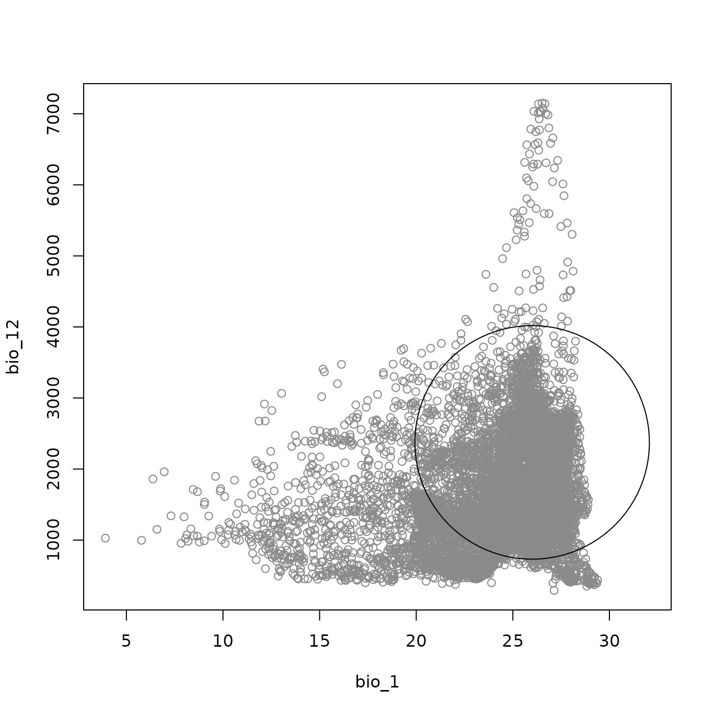
The appearance of both the background points and the ellipsoid boundary can be adjusted using familiar base R graphical parameters: point style and size for the background are controlled via pch, cex_bg, and col_bg, while the ellipsoid line style and color are set with lty, lwd, and col_ell. The axis limits of the plot can be fixed using the fixed_lims argument, and the number of background points rendered can be reduced with bg_sample to improve plotting speed when working with dense environmental data.
The add_data() function can be used to overlay
additional information onto the plot, such as the ellipsoid centroid,
species occurrence records, or a second set of background points. In the
example below we add the centroid of the ellipsoid as a reference
point.
plot_ellipsoid(ell, background = bios_df, dim = c(1, 2), bg_sample = 5000,
pch = ".", cex_bg = 1.5, col_bg = "gray50", lwd = 2,
fixed_lims = list(xlim = c(5, 32), ylim = c(200, 7500)))
add_data(as.data.frame(t(ell$centroid)),
x = "bio_1", y = "bio_12",
pts_col = "red", cex = 1, pch = 18)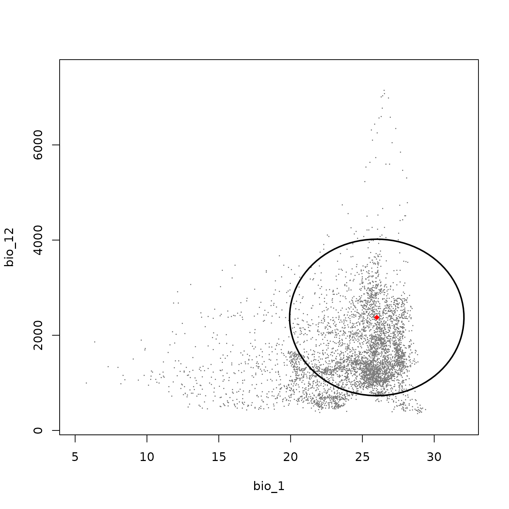
Adjusting ellipsoid covariance
An important property of an ellipsoidal niche is covariance between environmental variables. Covariance captures the idea that a species may not independently tolerate the full range of each variable; instead, its tolerance along one axis may depend on conditions along another. For example, a species might tolerate high temperatures only when precipitation is also high, creating a positive covariance between temperature and precipitation.
When an ellipsoid is first created with
build_ellipsoid(), all covariances are set to zero, meaning
the ellipsoid axes are aligned with the coordinate axes. Each ellipsoid
object contains a cov_limits element that reports the
minimum and maximum covariance values that are valid for that ellipsoid
given its shape and size.
# Inspect the allowable covariance range
ell$cov_limits
#> min max
#> bio_1-bio_12 -1083.333 1083.333The update_ellipsoid_covariance() function applies a new
covariance value to an existing ellipsoid. All properties of the object
(covariance matrix, ellipsoid boundary, volume) are recalculated to
reflect the updated shape. Applying a covariance value introduces a tilt
in the ellipsoid, reflecting the correlation between the two
variables.
# Apply a positive covariance between bio_1 and bio_12
ell2 <- update_ellipsoid_covariance(ell, c("bio_1-bio_12" = 750))
#> Starting: updating covariance values...
#> Step: computing ellipsoid metrics...
#> Done: updated ellipsoidal niche metrics
ell2
#> nicheR Ellipsoid Object
#> -----------------------
#> Dimensions: 2D
#> Chi-square cutoff: 9.21
#> Centroid (mu): 26, 2375
#>
#> Covariance matrix:
#> bio_1 bio_12
#> bio_1 4 750.0
#> bio_12 750 293402.8
#>
#> Ellipsoid semi-axis lengths:
#> 1643.885, 4.38
#>
#> Ellipsoid axis endpoints:
#> Axis 1:
#> bio_1 bio_12
#> vertex_a 21.798 731.121
#> vertex_b 30.202 4018.879
#>
#> Axis 2:
#> bio_1 bio_12
#> vertex_a 30.38 2374.989
#> vertex_b 21.62 2375.011
#>
#> Ellipsoid volume: 22619.64Attempting to set a covariance value outside the allowable range will return an error rather than producing an invalid ellipsoid.
ell2 <- update_ellipsoid_covariance(ell, c("bio_1-bio_12" = 10000))
#> Starting: updating covariance values...
#> Error in `update_covariance()`:
#> ! The provided covariance values result in a non-positive definite matrix.We can use add_ellipsoid() to overlay the updated
ellipsoid on the same plot as the original, allowing a direct visual
comparison of the two shapes. The updated ellipsoid (green) shows a
clear tilt relative to the original (purple), reflecting the introduced
covariance.
plot_ellipsoid(ell, background = bios_df, dim = c(1, 2), bg_sample = 5000,
pch = ".", cex_bg = 1.5, col_bg = "gray50", lwd = 3,
col_ell = "purple", lty = 6,
fixed_lims = list(xlim = c(14, 32), ylim = c(200, 5000)))
nicheR::add_data(as.data.frame(t(ell$centroid)),
x = "bio_1", y = "bio_12",
pts_col = "purple", cex = 1, pch = 18)
add_ellipsoid(ell2, lwd = 3, col_ell = "forestgreen", lty = 6)
nicheR::add_data(as.data.frame(t(ell2$centroid)),
x = "bio_1", y = "bio_12",
pts_col = "forestgreen", cex = 1, pch = 18)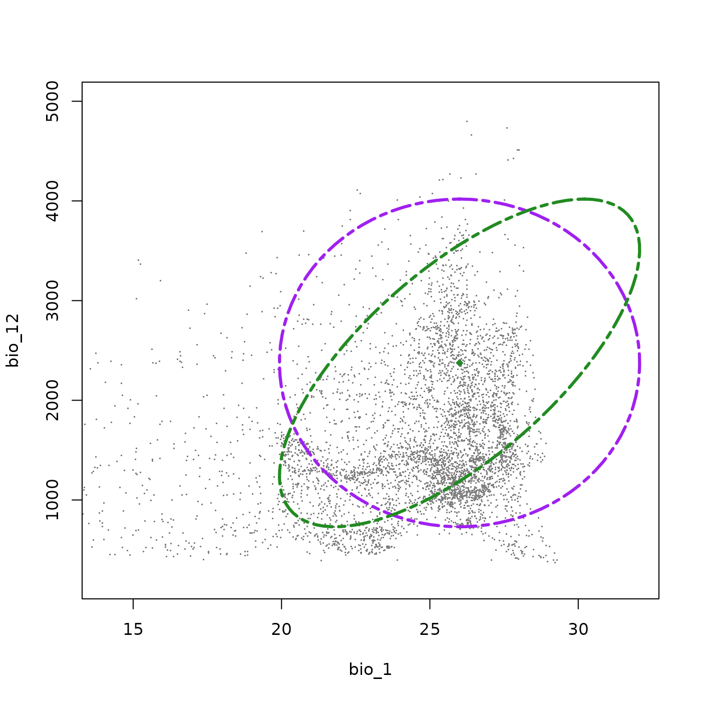
Comparing multiple species niches
To illustrate how different niches can be represented and compared,
we will build two additional species and progressively add them to the
same environmental space. This demonstrates both the range of niche
shapes that can be parameterized and the use of
add_ellipsoid() for visual comparison.
Let’s start with a second species characterized by cooler and wetter environmental requirements.
range <- data.frame(bio_1 = c(12, 24),
bio_12 = c(1400, 4500))
ell3 <- build_ellipsoid(range = range)
#> Starting: building ellipsoidal niche from ranges...
#> Step: computing covariance matrix...
#> Step: computing additional ellipsoidal niche metrics...
#> Done: created ellipsoidal niche.
ell3$cov_limits
#> min max
#> bio_1-bio_12 -1033.333 1033.333
ell3 <- update_ellipsoid_covariance(ell3, c("bio_1-bio_12" = 500))
#> Starting: updating covariance values...
#> Step: computing ellipsoid metrics...
#> Done: updated ellipsoidal niche metricsPlotting both species together shows how they appear in the available environmental space. Species 1 (green) occupies a broad warm-climate niche with wide precipitation tolerance, avoiding only the warmest and driest conditions due to the covaraince between those variables. Species 2 (brown) is shifted toward cooler, wetter environments with a similar covariance structure, but its niche falls in a region of the background that is less represented in our background data, meaning that dispite a similar niche volume, this species is realistically more limited within the actual environment of our study region.
plot_ellipsoid(ell2, background = bios_df, dim = c(1, 2), bg_sample = 5000,
pch = ".", cex_bg = 1.5, col_bg = "gray50", lwd = 3,
col_ell = "forestgreen", lty = 6,
fixed_lims = list(xlim = c(6, 32), ylim = c(200, 5000)))
add_data(as.data.frame(t(ell2$centroid)),
x = "bio_1", y = "bio_12",
pts_col = "forestgreen", cex = 2, pch = 18)
add_ellipsoid(ell3, lwd = 3, col_ell = "brown", lty = 6)
add_data(as.data.frame(t(ell3$centroid)),
x = "bio_1", y = "bio_12",
pts_col = "brown", cex = 2, pch = 18)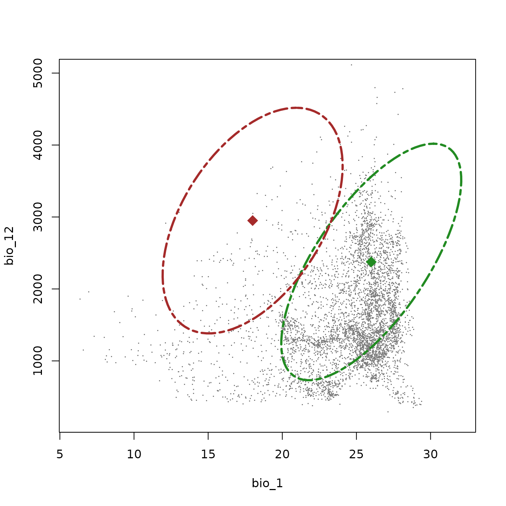
Now let’s define a third species with a very different ecological character: a warm-adapted specialist restricted to dry environments.
range <- data.frame(bio_1 = c(18, 30),
bio_12 = c(200, 1100))
ell4 <- build_ellipsoid(range = range)
#> Starting: building ellipsoidal niche from ranges...
#> Step: computing covariance matrix...
#> Step: computing additional ellipsoidal niche metrics...
#> Done: created ellipsoidal niche.
ell4$cov_limits
#> min max
#> bio_1-bio_12 -300 300
ell4 <- update_ellipsoid_covariance(ell4, c("bio_1-bio_12" = 120))
#> Starting: updating covariance values...
#> Step: computing ellipsoid metrics...
#> Done: updated ellipsoidal niche metricsAdding this third species to the plot shows its uniquness compared to the other two species. While the first two species follow a broadly wet-warm axis, this species (orange) is specialized toward the warm, dry corner of the environmental space. While its thermal tolerances are still relativly wide, its explicitly specialized to dry environments. Its niche volume is smaller and its covariance is much lower than in the other two species (showing as a less extreem tilt), reflecting only a slight tendency to tolerate marginally warmer conditions in comprably wetter environments.
plot_ellipsoid(ell2, background = bios_df, dim = c(1, 2), bg_sample = 5000,
pch = ".", cex_bg = 1.5, col_bg = "gray50", lwd = 3,
col_ell = "forestgreen", lty = 6,
fixed_lims = list(xlim = c(6, 32), ylim = c(200, 5000)))
add_data(as.data.frame(t(ell2$centroid)),
x = "bio_1", y = "bio_12",
pts_col = "forestgreen", cex = 2, pch = 18)
add_ellipsoid(ell3, lwd = 3, col_ell = "brown", lty = 6)
add_data(as.data.frame(t(ell3$centroid)),
x = "bio_1", y = "bio_12",
pts_col = "brown", cex = 2, pch = 18)
add_ellipsoid(ell4, lwd = 3, col_ell = "orange", lty = 6)
add_data(as.data.frame(t(ell4$centroid)),
x = "bio_1", y = "bio_12",
pts_col = "orange", cex = 2, pch = 18)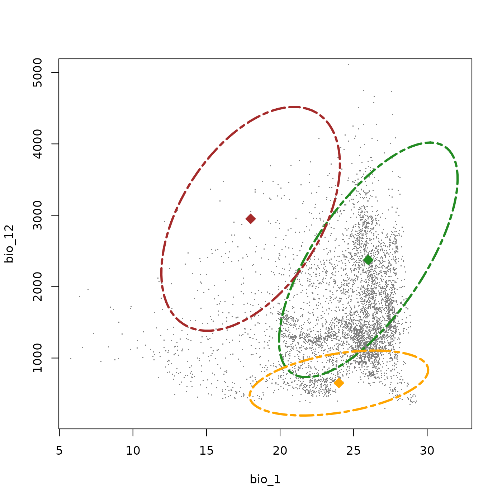
Save and import
To facilitate saving nicheR objects between sessions,
this package provides the save_nicheR() and
read_nicheR() functions. These work with any
nicheR_ellipsoid object and allow previously defined niches
to be saved and reloaded without repeating the parameterization
workflow. Let’s save the three species we have defined so far.
# Save ellipsoid objects to a local directory
temp_file1 <- file.path(tempdir(), "example_sp_1.rds")
save_nicheR(ell2, file = temp_file1)
temp_file2 <- file.path(tempdir(), "example_sp_2.rds")
save_nicheR(ell3, file = temp_file2)
temp_file3 <- file.path(tempdir(), "example_sp_3.rds")
save_nicheR(ell4, file = temp_file3)We can reload any of these objects and work with them exactly as before. Below we reimport the first species and visualize it to confirm the niche has been recovered correctly.
# Import an ellipsoid object from a local directory
read_example_sp <- read_nicheR(temp_file1)
print(read_example_sp)
#> nicheR Ellipsoid Object
#> -----------------------
#> Dimensions: 2D
#> Chi-square cutoff: 9.21
#> Centroid (mu): 26, 2375
#>
#> Covariance matrix:
#> bio_1 bio_12
#> bio_1 4 750.0
#> bio_12 750 293402.8
#>
#> Ellipsoid semi-axis lengths:
#> 1643.885, 4.38
#>
#> Ellipsoid axis endpoints:
#> Axis 1:
#> bio_1 bio_12
#> vertex_a 21.798 731.121
#> vertex_b 30.202 4018.879
#>
#> Axis 2:
#> bio_1 bio_12
#> vertex_a 30.38 2374.989
#> vertex_b 21.62 2375.011
#>
#> Ellipsoid volume: 22619.64
plot_ellipsoid(read_example_sp, background = bios_df, dim = c(1, 2),
bg_sample = 5000, pch = ".", cex_bg = 1.5, col_bg = "gray50",
lwd = 3, col_ell = "forestgreen", lty = 6,
fixed_lims = list(xlim = c(6, 32), ylim = c(200, 5000)))
add_data(as.data.frame(t(read_example_sp$centroid)),
x = "bio_1", y = "bio_12",
pts_col = "forestgreen", cex = 2, pch = 18)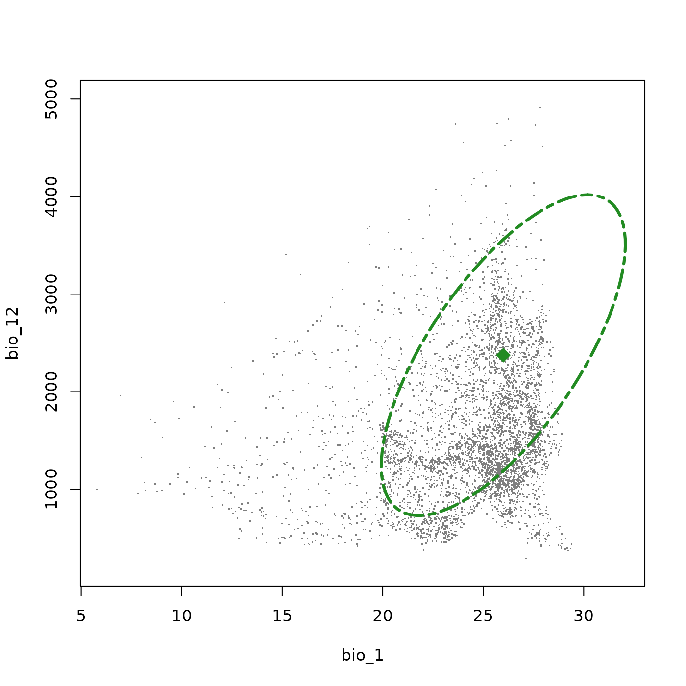
Working in more than 2 dimensions
All examples so far have defined niches in two-dimensional
environmental space. However, nicheR supports ellipsoid
niches in any number of dimensions. The workflow is similar to the
two-dimensional examples, with the only addition being more variables
included in the range data frame. Here we add ‘bio_15’,
precipitation seasonality, as an additional dimension.
# Define ranges across three environmental variables
range <- data.frame(bio_1 = c(22, 32),
bio_12 = c(800, 4200),
bio_15 = c(45, 115))
ell5 <- build_ellipsoid(range = range)
#> Starting: building ellipsoidal niche from ranges...
#> Step: computing covariance matrix...
#> Step: computing additional ellipsoidal niche metrics...
#> Done: created ellipsoidal niche.
ell5
#> nicheR Ellipsoid Object
#> -----------------------
#> Dimensions: 3D
#> Chi-square cutoff: 11.345
#> Centroid (mu): 27, 2500, 80
#>
#> Covariance matrix:
#> bio_1 bio_12 bio_15
#> bio_1 2.778 0.0 0.000
#> bio_12 0.000 321111.1 0.000
#> bio_15 0.000 0.0 136.111
#>
#> Ellipsoid semi-axis lengths:
#> 1908.655, 39.296, 5.614
#>
#> Ellipsoid axis endpoints:
#> Axis 1:
#> bio_1 bio_12 bio_15
#> vertex_a 27 591.345 80
#> vertex_b 27 4408.655 80
#>
#> Axis 2:
#> bio_1 bio_12 bio_15
#> vertex_a 27 2500 40.704
#> vertex_b 27 2500 119.296
#>
#> Axis 3:
#> bio_1 bio_12 bio_15
#> vertex_a 21.386 2500 80
#> vertex_b 32.614 2500 80
#>
#> Ellipsoid volume: 1763644With three variables, the cov_limits element now reports
allowable covariance ranges for each of the three variable pairs. The
number of covariance parameters grows with the number of dimensions, so
it is important to review these limits before making adjustments.
ell5$cov_limits
#> min max
#> bio_1-bio_12 -472.222222 935.00
#> bio_1-bio_15 -9.722222 19.25
#> bio_12-bio_15 -3305.555555 6545.00Multiple covariances can be updated simultaneously using
update_ellipsoid_covariance(). Here we introduce a positive
covariance between bio_1 and bio_12, no covariance between bio_1 and
bio_15, and a negative covariance between bio_12 and bio_15, reflecting
that this species is more tolerant of comprably dryer environments when
those environments have extreme seasonal pulses of precipitation.
ell5 <- update_ellipsoid_covariance(ell5, c("bio_1-bio_12" = 200,
"bio_1-bio_15" = 0,
"bio_12-bio_15" = -5000))
#> Starting: updating covariance values...
#> Step: computing ellipsoid metrics...
#> Done: updated ellipsoidal niche metricsTwo-dimensional projections of the multidimensional ellipsoid can be
plotted individually using plot_ellipsoid() by specifying
the dim argument.
plot_ellipsoid(ell5, background = bios_df, dim = c(1, 2), bg_sample = 5000,
pch = ".", cex_bg = 1.5, col_bg = "gray50", lwd = 3,
col_ell = "blue", lty = 6,
fixed_lims = list(xlim = c(6, 32), ylim = c(200, 5000)))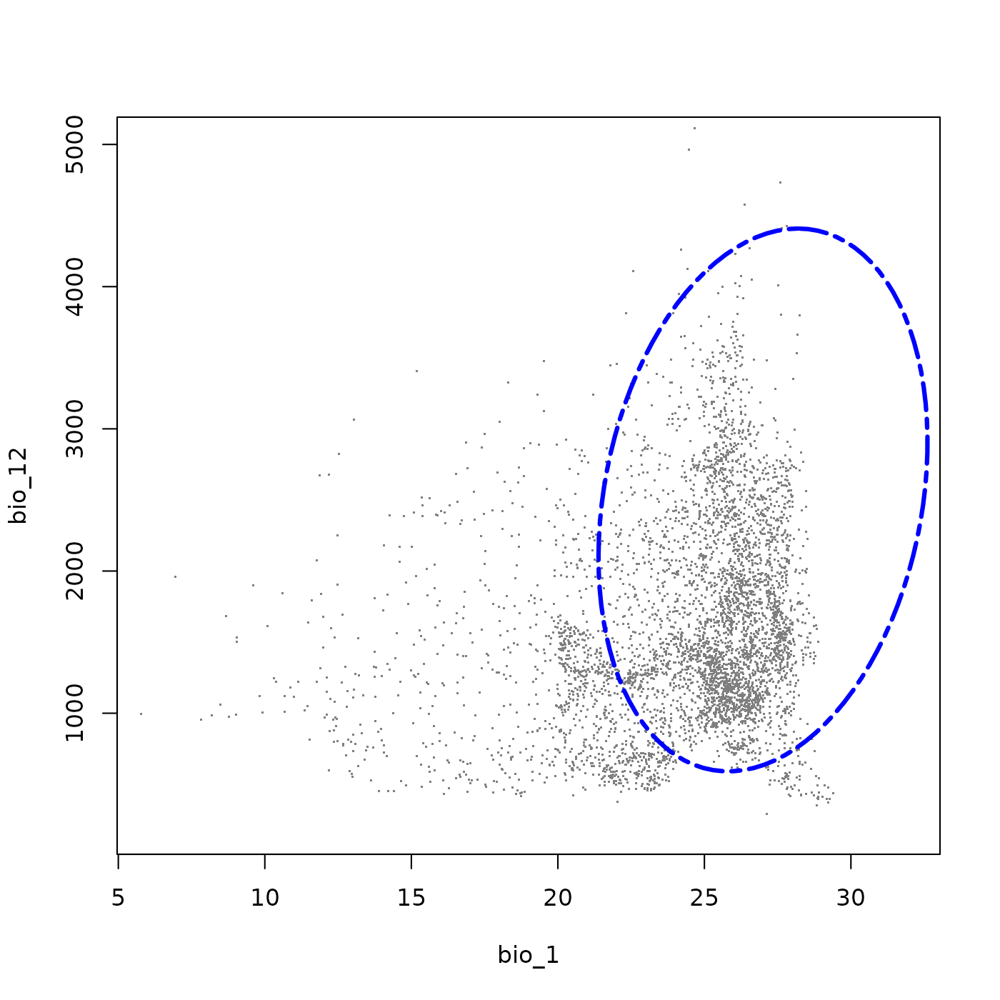
plot_ellipsoid(ell5, background = bios_df, dim = c(2, 3), bg_sample = 5000,
pch = ".", cex_bg = 1.5, col_bg = "gray50", lwd = 3,
col_ell = "blue", lty = 6,
fixed_lims = list(xlim = c(200, 5000), ylim = c(20, 120)))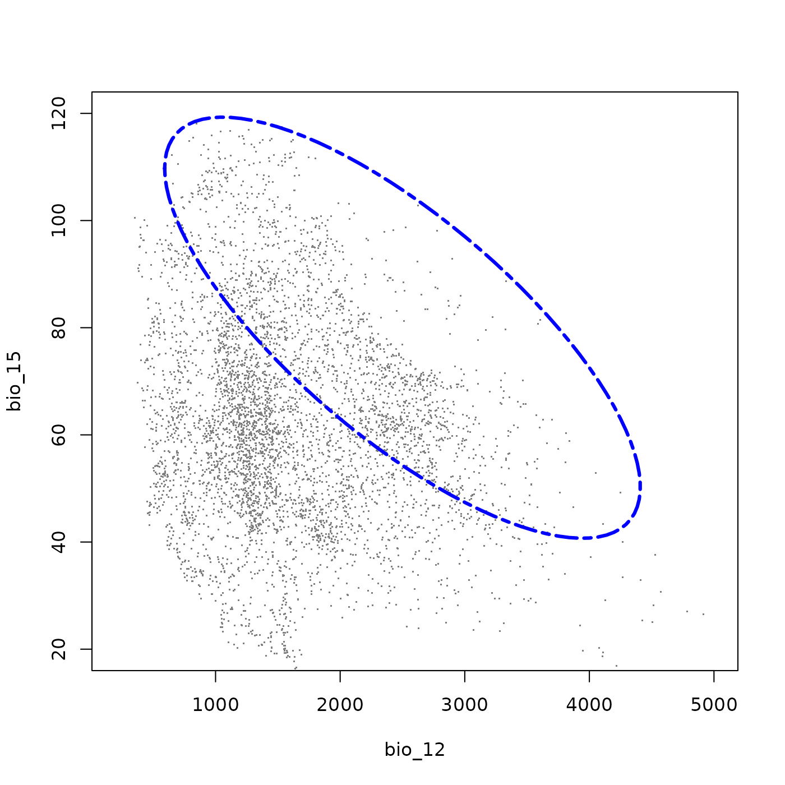
plot_ellipsoid(ell5, background = bios_df, dim = c(1, 3), bg_sample = 5000,
pch = ".", cex_bg = 1.5, col_bg = "gray50", lwd = 3,
col_ell = "blue", lty = 6,
fixed_lims = list(xlim = c(6, 32), ylim = c(20, 120)))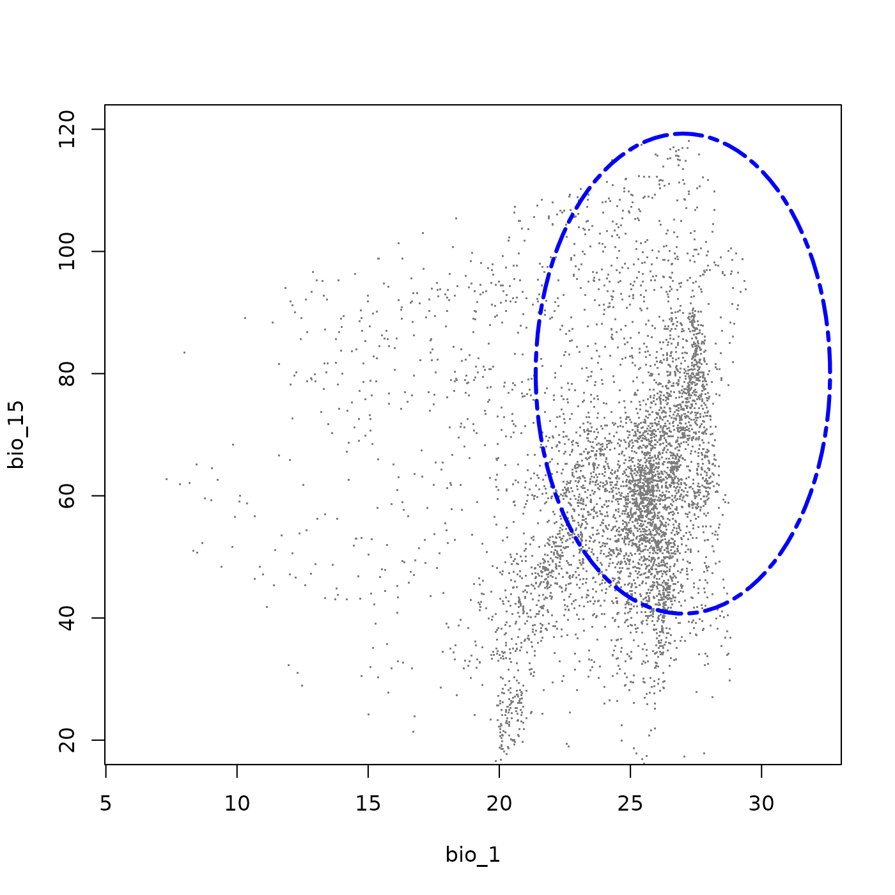
Alternatively, plot_ellipsoid_pairs() produces all
pairwise projections at once. This function offers fewer customization
options than plot_ellipsoid() (add_data() and
add_ellipsoid() don’t work with this tool) and is intended
primarily for quick exploratory visualization.
plot_ellipsoid_pairs(ell5, background = bios_df, pch = ".", cex_bg = 1.5,
col_bg = "gray50", lwd = 3, lty = 6, col_ell = "blue")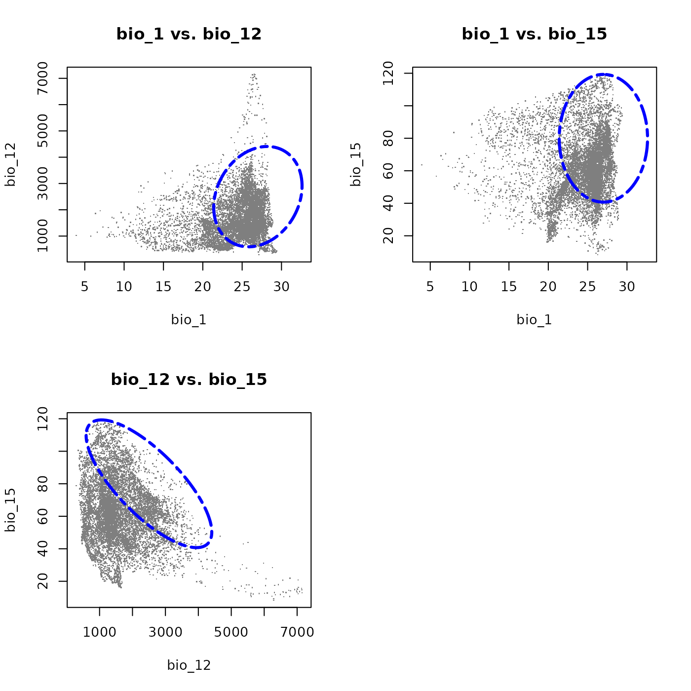
This three-dimensional species shares the wide thermal and precipitation tolerances of the first example, including an avoidance of the warmest and driest environments. The addition of bio_15 characterizes the species in terms of precipitation seasonality: the strong negative covariance between bio_12 and bio_15 means the species tolerates less seasonal precipitation regimes only where total precipitation is high, but depends on strongly seasonal rainfall where precipitation is comprably lower. This makes it a good example of a species adapted to seasonally pulsed precipitation environments.
Save and import
We can save this three-dimensional species for use in later sessions alongside the two-dimensional examples defined above.
temp_file4 <- file.path(tempdir(), "example_sp_4.rds")
save_nicheR(ell5, file = temp_file4)This concludes the basics for defining ellipsoid-based tolerances for species in E-space. To learn how to make predictions from these ellipsoid niches and visualize them in geographic space (G-space), see the next vignette: Making Predictions.